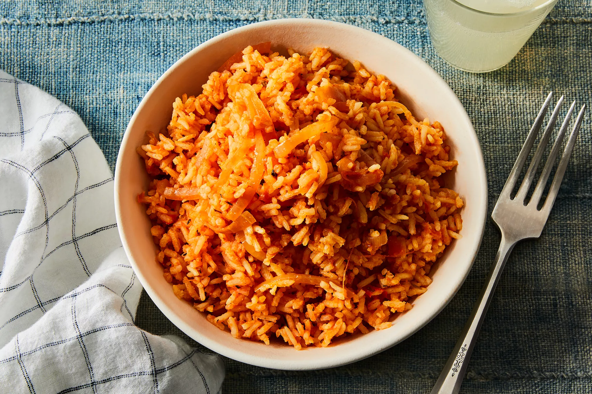

Jollof rice is a rice dish from West Africa. The dish is typically made with long-grain rice, tomatoes, onions, spices, vegetables and meat in a single pot, although its ingredients and preparation methods vary across different regions.
The origins of jollof rice can be traced to the Senegambian region that was ruled by the Wolof or Jolof Empire in the 14th century, spanning parts of today's Senegal, The Gambia and Mauritania, where rice was grown. The dish has its roots in a traditional dish called thieboudienne, containing rice, fish, shellfish and vegetables.
Food and agriculture historian James C. McCann considers this claim plausible given the popularity of rice in the upper Niger valley, but considers it unlikely that the dish could have spread from Senegal to its current range since such a diffusion is not seen in "linguistic, historical or political patterns".
Instead he proposes that the dish spread with the Mali empire, especially the Djula tradespeople who dispersed widely to the regional commercial and urban centers, taking with them economic arts of "blacksmithing, small-scale marketing, and rice agronomy" as well as the religion of Islam.
Marc Dufumier, an emeritus professor of agronomy, proposes a more recent origin for the dish, which may only have appeared as a consequence of the colonial promotion of intensive peanut cropping in central Senegal for the French oil industry, and where commensurate reduction in the planted area of traditional millet and sorghum staples was compensated by forced imports of broken rice from Southeast Asia.
It may then have spread throughout the region through the historical commercial, cultural and religious channels linking Senegal with Ghana, Nigeria and beyond, many of which continue to thrive today, such as the Tijāniyyah Sufi brotherhood bringing thousands of West African pilgrims to Senegal annually.
| Ingredients | Quantity |
|---|---|
| Long-grain brown rice | 3 cups |
| Plump fresh Tomatoes | 2 |
| Red bell pepper | 2 |
| Oil | 140ml |
| Large onion | 1 |
| Garlic | 2 teaspoons |
| Thyme | 1 teaspoon |
| Tomato paste | 3 tablespoons |
| Bay leaf | 1 |
| Scotch bonnet pepper | 1 |
| Bouillon powder | 1 tablespoon |
| Chicken broth | 2 cups |
| Water | 2 cups |
| salt | to taste |